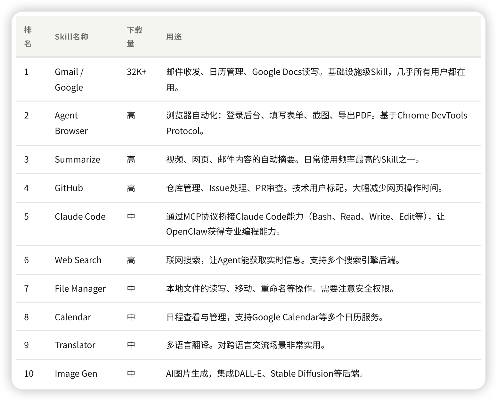

OpenClaw 从入门到实战
Lucas · 2026.03.12
一个开源、自托管的 AI Agent 系统，让 AI 从「聊天工具」变成「能自主执行任务的数字员工」。
顾问 — 你问它答
员工 — 主动执行任务
开源的「个人 AI 操作系统」
在自己的服务器运行，通过任何 IM 交互
所有配置以纯文本文件形式存在 — 可读、可版本控制、可 AI 理解
OpenClaw 可以在运行时写、重载、测试自己的扩展
→ 自己写一个 Skill
→ 修改代码并热重载
→ 优化自己的工具链
→ 从 ClawHub 获取社区技能
选择最适合你的方式开始养虾
推荐 · 最简单
适合有 Node.js 环境
curl 一行搞定
自动安装依赖
容器化部署
适合服务器
一键部署模板
零运维
三步完成，五分钟上手
OpenClaw 支持 20+ 消息平台，选一个你最常用的开始
通过 ClawHub 技能市场，一行命令安装新能力

安装前必须扫描 — 用 SecureClaw 审计技能安全性
可疑外发请求、密钥读取、编码混淆、核心文件写入
优先用 awesome-openclaw-skills 精选列表
base64 decode、curl 外传、修改 SOUL.md
根据你的技术能力选择合适的方案
不想折腾，开箱即用
有能力自建，追求极致
通过 Chrome DevTools MCP 操控已登录的 Chrome 浏览器
连接已登录的 Chrome，无需额外登录
支持图文 + 长文 + AI 生成封面
从内容生成到发布，一句话搞定
交互式问卷，帮你从模糊 idea 精炼为专业 PRD
明确目标
和价值主张
用户故事
和使用场景
功能设计
和技术方案
验收标准
和测试用例
一步步引导，不遗漏关键信息
直接写入 Confluence 页面，无需手动复制
扫码交流 · 一起养虾
Made with 🐾 by Luca